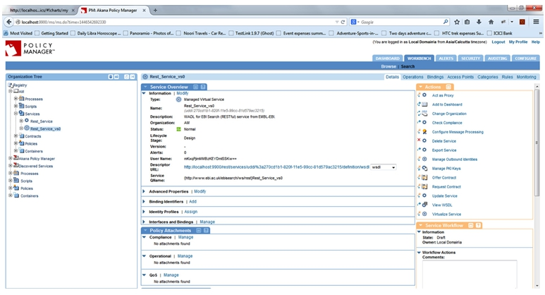
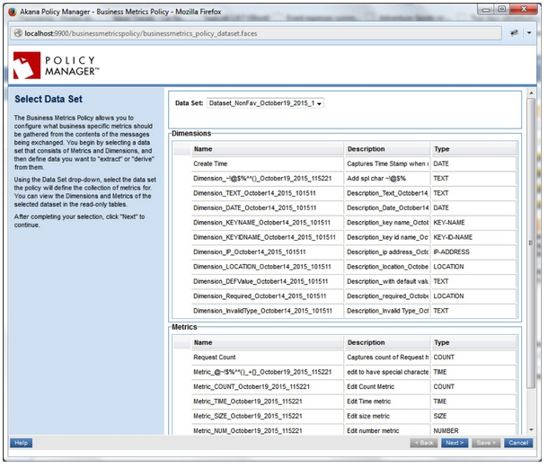
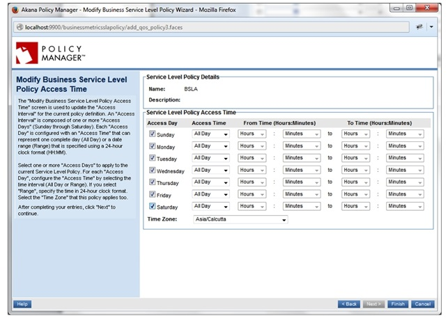

Configuring a Business Metrics policy to set SLA for a service
The following use case illustrates how to configure a Business Metrics policy to set SLA for a service.
Supported Platforms: 8.0 and greater.
Configuration
- Create a physical service.
- Virtualize the physical service.

- Configure the Business Metrics Policy:
- Select any dataset.

- Provide dimensions and metrics configuration:


- Activate the policy.

- In the Policies > QoS section, click Add Policy to configure a Business Service Level Policy.
- Select the dataset you created, as shown below:

- Select Filters (by dimensions).

- Select desired condition based on the metrics in the dataset (data is loaded into the metrics as per the configuration in Business Metrics Policy).

- Select the alert code.
- Select the Days and Durations for which the alert will be triggered.

- Activate the policy.

- In the Operational Policies section, attach the Business Metrics Policy.
- In the QoS Policies section, attach the Business Service Level Policy.

- Send several requests to the virtual service so that the condition described in the Business Service Level Policy is crossed.
- See alerts at the service level.
- See SLA cleared alerts at the service level. The results should be similar to the illustration below.

Back to top